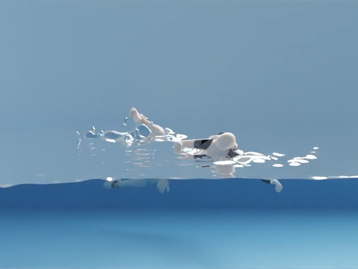

Binglun Wang, Doğa Yılmaz, Niloy Mitra, Edmond S. L. Ho, He Wang
Preprint, 2026
Project Page / Preprint
An AI framework for learning human swimming motion. Main contributions: 1. first work to learn stable, controllable, and natural full-body swimming policies, from only a single reference motion; 2. a novel body–water environment representation that enables this learning. SWIM achieves better stability, goal satisfaction, and physical realism: a 63.9% success rate on held-out generalization versus 36.8% for the strongest baseline.